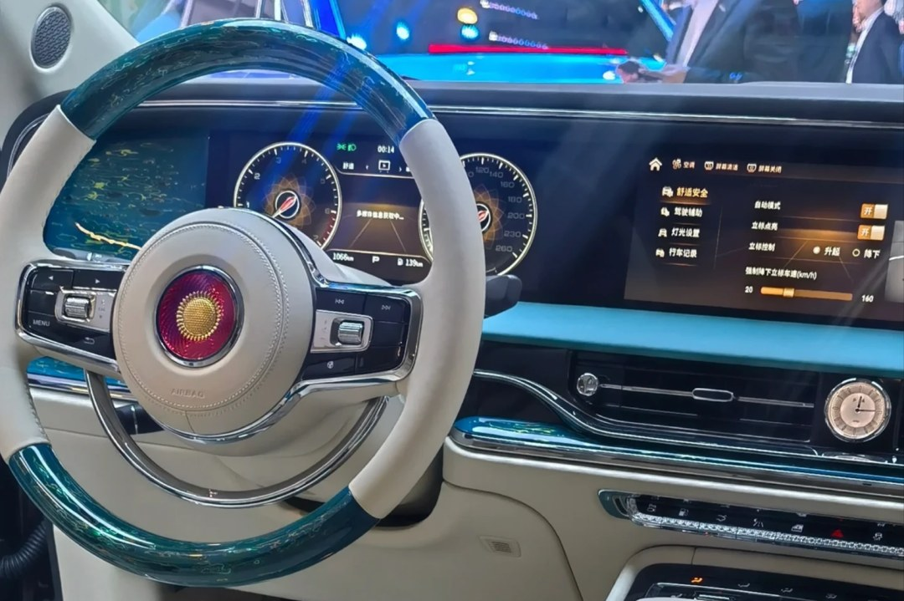

編集注：本記事はフォーラム開幕前に「EAC内外飾与座艙」が公開した登壇者予告（2026年9月21日）です。フォーラムは11月12〜13日に上海で開催され、会場レポートは「正大明 楊世鑫会長、EAC次世代コックピットフォーラムで講演」をご覧ください。

易貿（Emmore）主催、EAC内外飾与座艙が公式メディアを務める「EAC次世代コックピットシナリオイノベーションフォーラム」は2026年11月12〜13日に上海で開催されました。EACは正大明文化産業集団の楊世鑫会長を招待し、「中国漆の自動車産業CMFにおける設計と応用」を講演しました。
正大明文化産業集団について
正大明文化産業集団は天然漆と百年向き合い、陝西安康平利の牛王漆コア産地の天然生漆資源を基盤に、「漆の木栽培 → 採漆 → 精製加工 → 漆器製作 → 文化伝播」のフルチェーンを構築。陝西正大明文化産業・陝西龍頭国漆文化産業・西安漆器漢唐文化産業・牛王生漆農民専業合作社・牛王生漆研究所の五つの企業主体を擁し、正大明漆・龍頭国漆・牛王国漆・歳時記の四大ブランドで「材料—器物—生活」の全シーンをカバーしています。「正于心、明于器」を品質の規範として、フラッグシップブランド正大明は本物の天然生漆と非遗職人の手仕事を核に、政府贈答・文化コレクション・高級ライフスタイル市場へ漆器カスタムと髹飾トータルソリューションを提供します。

牛王生漆油漆技芸について
牛王生漆油漆技芸は「中国漆の木の郷」陝西安康平利に伝わる省级無形文化遺産です。原記事は写真を交えて、牛王漆の品質特徴と世代受け継がれてきた漆職人の体系を紹介し、講演で語られる自動車応用の源流となる材料供給体制を示しています。

登壇者について：楊世鑫
中国共産党員、清華大学MBA、高級工芸美術師、元華為A製品部PM。現・正大明文化産業集団会長として、中国伝統漆芸の現代的転換と無形文化遺産産業の現代化に長年取り組んでいます。経営学の訓練を土台に、漆工芸への深い理解と敬意を核に、戦略経営・ブランド運営・産業思考を古い手仕事に注ぎ込み、漆の木栽培・生漆精製・漆器研究開発・文化創造派生・非遗伝習を一体化したフルチェーン企業形態への転換を推進。西安漆器漢唐文化産業有限公司の創設にも参加し、企業の戦略企画・市場開拓・現代的経営管理制度の構築を主導しました。
産業連携では、三棵樹塗料と龍頭国漆の戦略的協業の企画・推進を担当し、伝統漆芸と現代塗料工業の融合の道筋を探りました。伝承・人材育成では、漆芸文化カリキュラム体系を開発し、累計100名以上を研修、「産業化の方法で手仕事を守り、市場化の言語で伝統を語る」ことを掲げて、政府・企業・大学・継承者の架け橋となっています。


フォーラムについて
フォーラムは車両トップレベルの視点として、市場・ユーザートレンド、車両シナリオ実装、全域五感インタラクション、人・車・家のクロスオーバー、AI大モデルなどのテーマを取り上げ、「新素材反復下の高級コックピットアップグレード：サステナビリティ・多感覚・国産化の産業バランスと実装戦略」などの円卓討論も行われました。
フォーラムは11月12〜13日に開催済みです。会場レポートは「正大明 楊世鑫会長、EAC次世代コックピットフォーラムで講演」と「EAC次世代コックピットシナリオイノベーションフォーラム閉幕」（転載）をお読みください。